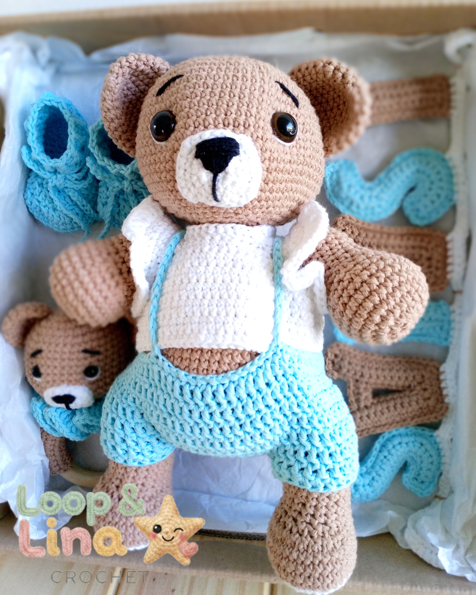
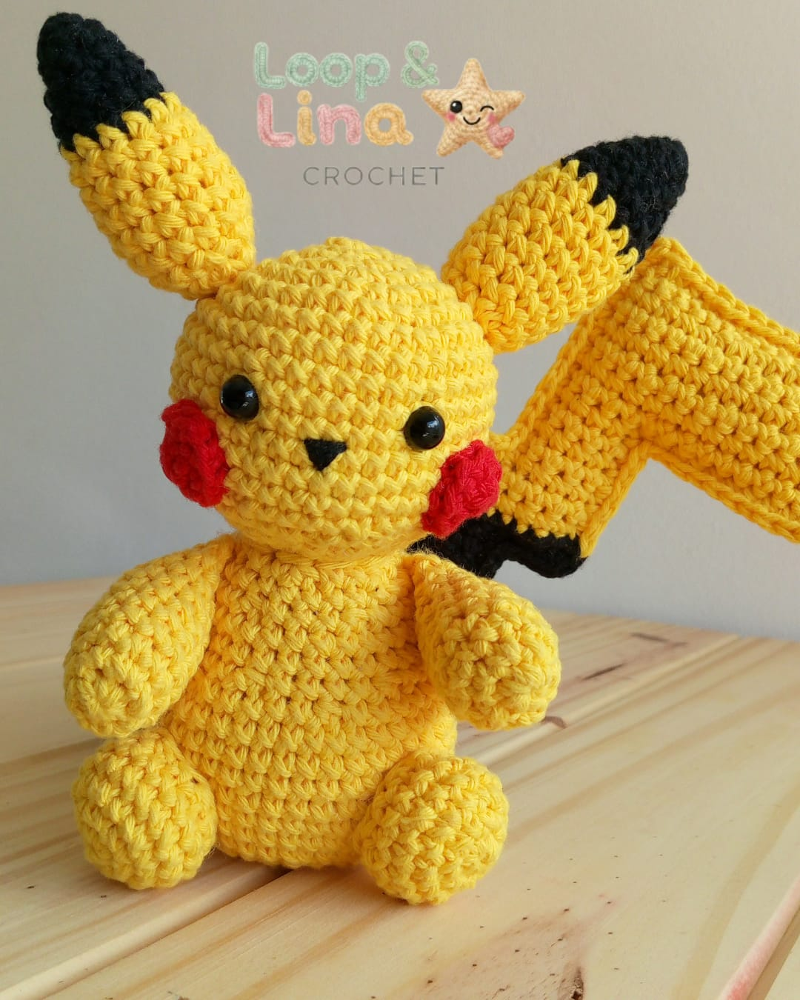
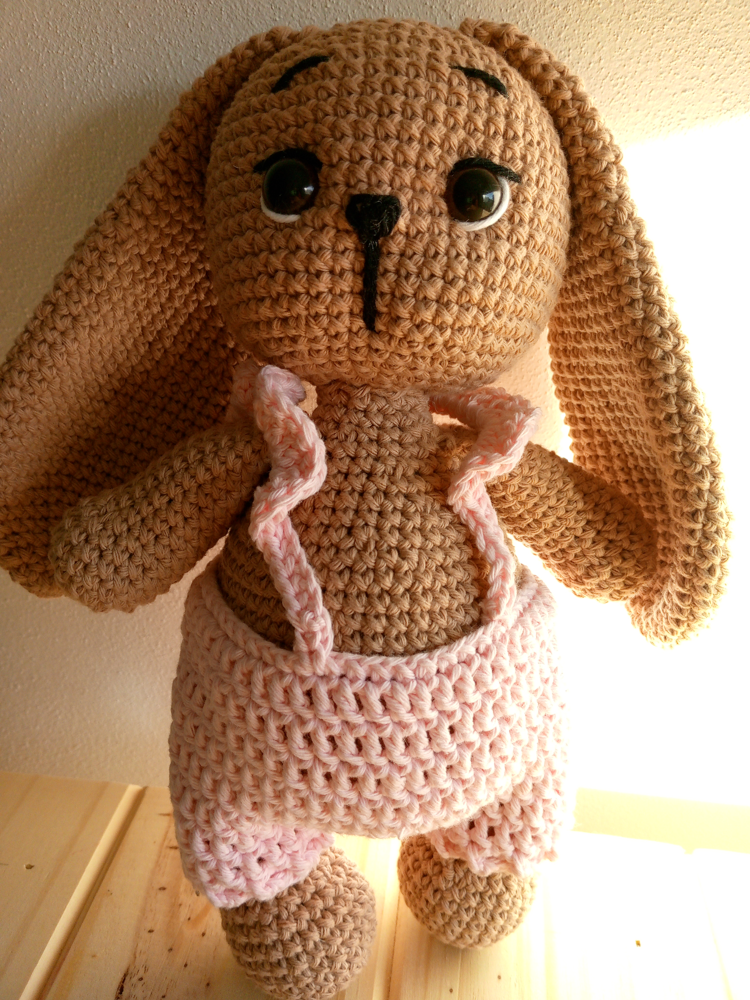
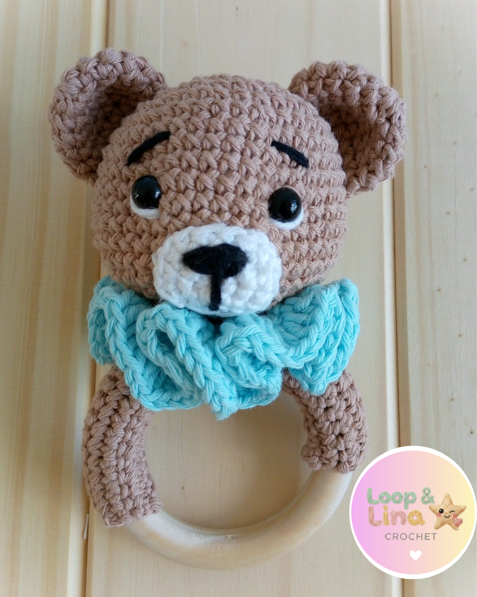

Creatividad en cada tejido
Creamos piezas únicas que combinan técnicas tradicionales con ideas originales.
Loop & Lina
Tejidos de crochet hechos a mano
Un espacio dedicado al mundo del crochet, donde cada tejido se realiza artesanalmente con creatividad, dedicación y amor por los detalles.

Creamos piezas únicas que combinan técnicas tradicionales con ideas originales.



